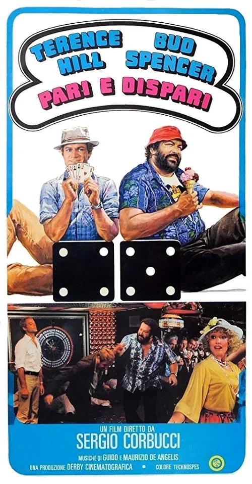

1978 · 7 tracce
Musiche di Guido e Maurizio De Angelis.
Colonna sonora integrale non reperita: sono elencati i brani identificati nelle fonti e le pubblicazioni associate. Restano possibili inserti, riprese strumentali e musiche non pubblicate.
Gli elenchi documentano le edizioni pubblicate; la presenza di ciascuna traccia nel montaggio del film non è certificata.
Brani e ascolti
- 01
Brotherly Love
Brano principale del film. Ascolto da raccolta: la versione può differire.
- 02
Miss Robot
OliverOnionsOfficial · Brano presente nel film. · Identificato nei risultati pubblici; apertura non verificata per un limite temporaneo di YouTube.
- 03
Switch
AbdelClément · Brano presente nel film.
- 04
The Man on the Boat
Video non identificato · collegamento a una ricerca · Brano presente nel film.
- 05
White Yellow and Black
QuisquisEst · Riutilizzato nella scena del gelato al pistacchio.
- 06
Angels and Beans
Riutilizzato nel film. Ascolto da raccolta: la versione può differire.
- 07
Song
Video non identificato · collegamento a una ricerca · Riutilizzato nella scena del roulette sulla nave.
Fonti e riferimenti
- Scheda del film e creditiConsultata il 3 ottobre 2026.
- Scheda brano: Brotherly LoveConsultata il 3 ottobre 2026.
- Scheda brano: Miss RobotConsultata il 3 ottobre 2026.
- Scheda brano: SwitchConsultata il 3 ottobre 2026.
- Scheda brano: The Man on the BoatConsultata il 3 ottobre 2026.
- Scheda brano: White Yellow and BlackConsultata il 3 ottobre 2026.
- Scheda brano: Angels and BeansConsultata il 3 ottobre 2026.
- Scheda brano: SongConsultata il 3 ottobre 2026.
- Locandina — Pari e dispariConsultata il 3 ottobre 2026.